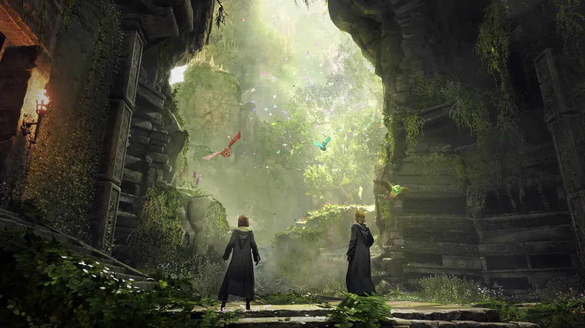

Bloomberg journalist Jason Schreier posted an article today detailing what each studio under the Warner Bros. Interactive umbrella have been working on since 2017.The outcome is… not much. It does a great job of highlighting the mismanagement of their IP over the years, and if you're interested in the business side of video games, I highly recommend giving it a read.
The key takeaway from the article is that the Wonder Woman game has cost more than $100 million, but is currently struggling and likely years away from release.
“We’ll get right back to profitability in 2025 ... We won’t get back to the profitability we want to get back to in the next two to three years. It will take two to three years to rebuild, reset to levels we want to be at, but the bounce back is immediate as far as going from loss-making to profitability.”
The mismanagement of WB games division has been staggering, but becomes more clear when you learn that colleagues describe David Haddad, head of WB games division, as "a polished executive who does not appear to spend much time playing video games himself". His subordinates say this was something they found challenging -I can imagine it must be difficult to explain the nuances of game development to a Harvard Business School graduate with no firsthand experience in the industry.
Image Credit: Warner Bros. Interactive
We need people running video game development studios that understand video games and fewer executives in suits with business degrees. We need people leading these studios with real passion for their craft that understand the intricacies of game development. Everyone wins in this scenario - the company produces successful games, the developers will have knowledgeable and reliable leadership, and consumers will get fantastic video games.
In an interview, Warner Bros.' head of games and global streaming, JB Perrette, affirmed that the company remains dedicated to producing video games and he will take a larger role running the division while they look for a replacement for Haddad.

Image Credit: Warner Bros. Interactive
During David Haddad’s tenure, Warner Bros. has seen multiple high-profile failures in recent years—Suicide Squad, Multiversus, Lord of the Rings: Shadow of War (a solid game once the predatory microtransactions were removed), and Harry Potter: Quidditch Champions. According to Jason’s article today, it appears that Wonder Woman may soon be added to this esteemed list.